# Training: Jun 2016 - Oct 2024
# Validation: Nov 24 - Oct 25
# Test: Nov 25 - Oct 26Pothole Requests
EDA and Preliminary ETS models
Pothole Requests Forecasts
library(readr)
library(tidyverse) ── Attaching core tidyverse packages ──────────────────────── tidyverse 2.0.0 ──
✔ dplyr 1.2.0 ✔ purrr 1.2.1
✔ forcats 1.0.1 ✔ stringr 1.6.0
✔ ggplot2 4.0.2 ✔ tibble 3.3.1
✔ lubridate 1.9.5 ✔ tidyr 1.3.2
── Conflicts ────────────────────────────────────────── tidyverse_conflicts() ──
✖ dplyr::filter() masks stats::filter()
✖ dplyr::lag() masks stats::lag()
ℹ Use the conflicted package (<http://conflicted.r-lib.org/>) to force all conflicts to become errorslibrary(fpp3) ── Attaching packages ──────────────────────────────────────────── fpp3 1.0.3 ──
✔ tsibble 1.2.0 ✔ feasts 0.5.0
✔ tsibbledata 0.4.1 ✔ fable 0.5.0
✔ ggtime 1.1.0
── Conflicts ───────────────────────────────────────────────── fpp3_conflicts ──
✖ lubridate::date() masks base::date()
✖ dplyr::filter() masks stats::filter()
✖ tsibble::intersect() masks base::intersect()
✖ tsibble::interval() masks lubridate::interval()
✖ dplyr::lag() masks stats::lag()
✖ tsibble::setdiff() masks base::setdiff()
✖ tsibble::union() masks base::union()dir.create('figures', showWarnings = FALSE)Data Inspection
pothole <- read_csv('Data/get_it_done_pothole_requests_datasd.csv')Rows: 181105 Columns: 23
── Column specification ────────────────────────────────────────────────────────
Delimiter: ","
chr (12): sap_notification_number, case_record_type, service_name, status, ...
dbl (8): service_request_id, service_request_parent_id, case_age_days, lat...
lgl (1): service_name_detail
dttm (1): date_requested
date (1): date_closed
ℹ Use `spec()` to retrieve the full column specification for this data.
ℹ Specify the column types or set `show_col_types = FALSE` to quiet this message.head(pothole)# A tibble: 6 × 23
service_request_id service_request_parent_id sap_notification_number
<dbl> <dbl> <chr>
1 2995204 NA 040300314515
2 2995567 NA 040300314702
3 2995795 NA 040300314740
4 2995998 NA 040300314684
5 2996127 NA 040300314774
6 2996927 NA 040300315118
# ℹ 20 more variables: date_requested <dttm>, case_age_days <dbl>,
# case_record_type <chr>, service_name <chr>, service_name_detail <lgl>,
# date_closed <date>, status <chr>, lat <dbl>, lng <dbl>,
# street_address <chr>, zipcode <dbl>, council_district <dbl>,
# comm_plan_code <dbl>, comm_plan_name <chr>, park_name <chr>,
# case_origin <chr>, referred <chr>, iamfloc <chr>, floc <chr>,
# public_description <chr>dim(pothole)[1] 181105 23pothole |>
select(date_requested, date_closed, zipcode, sap_notification_number) |>
glimpse()Rows: 181,105
Columns: 4
$ date_requested <dttm> 2020-06-27 08:53:00, 2020-06-27 19:13:00, 202…
$ date_closed <date> 2020-07-01, 2020-07-06, 2020-06-29, 2020-06-2…
$ zipcode <dbl> 92101, 92126, 92110, 92122, 92154, 92109, 9210…
$ sap_notification_number <chr> "040300314515", "040300314702", "040300314740"…pothole |> summarise(
# first observation
first = min(date_requested),
# last observation
last = max(date_requested),
missing_dates = sum(is.na(date_requested))
)# A tibble: 1 × 3
first last missing_dates
<dttm> <dttm> <int>
1 2016-05-20 08:55:00 2026-11-03 22:39:57 0There are no missing dates in the pothole data set.
# duplicate requests store the id of the original "parent" request in 'service_request_parent_id'
# is.na checks for distinct potholes requests that returns true if NA in 'service_request_parent_id'
pothole_unique <- pothole |>
mutate(is_unique = is.na(service_request_parent_id))
# orignal vs duplicates
pothole_unique |>
count(is_unique) |>
mutate(share = n/sum(n))# A tibble: 2 × 3
is_unique n share
<lgl> <int> <dbl>
1 FALSE 55459 0.306
2 TRUE 125646 0.694Of the 181,105 records, 125,646 are unique pothole requests, meaning approximately 69% of pothole service requests refer to unique potholes.
pothole_monthly <- pothole_unique |>
# data to month
mutate(month = yearmonth(date_requested)) |>
# complete months only
filter(month >= yearmonth('2016 Jun'),
month <= yearmonth('2026 Oct')) |>
group_by(month) |>
summarise(
unique_potholes = sum(is_unique), # distinct requests
total_reports = n(), # all requests including duplicates
.groups = 'drop'
) |>
as_tsibble(index = month)
pothole_monthly# A tsibble: 125 x 3 [1M]
month unique_potholes total_reports
<mth> <int> <int>
1 2016 Jun 667 859
2 2016 Jul 353 447
3 2016 Aug 365 421
4 2016 Sep 464 592
5 2016 Oct 427 523
6 2016 Nov 467 582
7 2016 Dec 824 1104
8 2017 Jan 2996 6680
9 2017 Feb 1737 3296
10 2017 Mar 1983 3899
# ℹ 115 more rowshas_gaps(pothole_monthly)# A tibble: 1 × 1
.gaps
<lgl>
1 FALSEData Partitioning
# training set to fit models
train_data <- pothole_monthly |>
filter_index(. ~ '2024 Oct')
# validation set to compare models and chose the best performing model
val_data <- pothole_monthly |>
filter_index('2024 Nov' ~ '2025 Oct')
# test set for final evaluation
test_data <- pothole_monthly |>
filter_index('2025 Nov' ~ .)tibble(
set = c('train', 'validation', 'test'),
first = c(min(train_data$month), min(val_data$month), min(test_data$month)),
last = c(max(train_data$month), max(val_data$month), max(test_data$month)),
months = c(nrow(train_data), nrow(val_data), nrow(test_data))
)# A tibble: 3 × 4
set first last months
<chr> <mth> <mth> <int>
1 train 2016 Jun 2024 Oct 101
2 validation 2024 Nov 2025 Oct 12
3 test 2025 Nov 2026 Oct 12EDA
pothole_monthly |>
autoplot(total_reports) +
labs(
title = 'Total Pothole Requests Reports',
y = 'Number of total reports'
)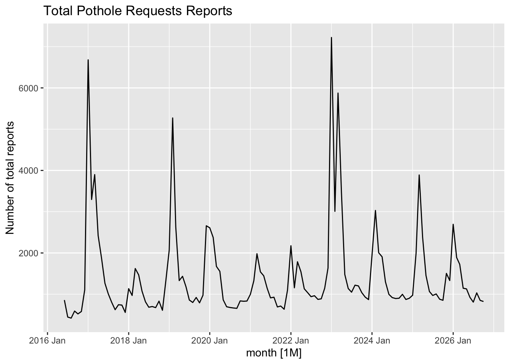
pothole_monthly |>
autoplot(unique_potholes) +
geom_vline(
xintercept = as.Date(c(yearmonth('2024 Nov'), yearmonth('2025 Nov'))),
linetype = 'dashed', linewidth = 0.5, colour ='orange') +
labs(
title = 'Monthly Unique Pothole Requests',
subtitle = 'Lines show validation and test periods',
y = 'Number of unique requests'
) -> p_unique_pothole_ts
ggsave('figures/unique_pothole_requests_monthly.png', plot = p_unique_pothole_ts,
width = 8, height = 5, dpi = 300)
p_unique_pothole_ts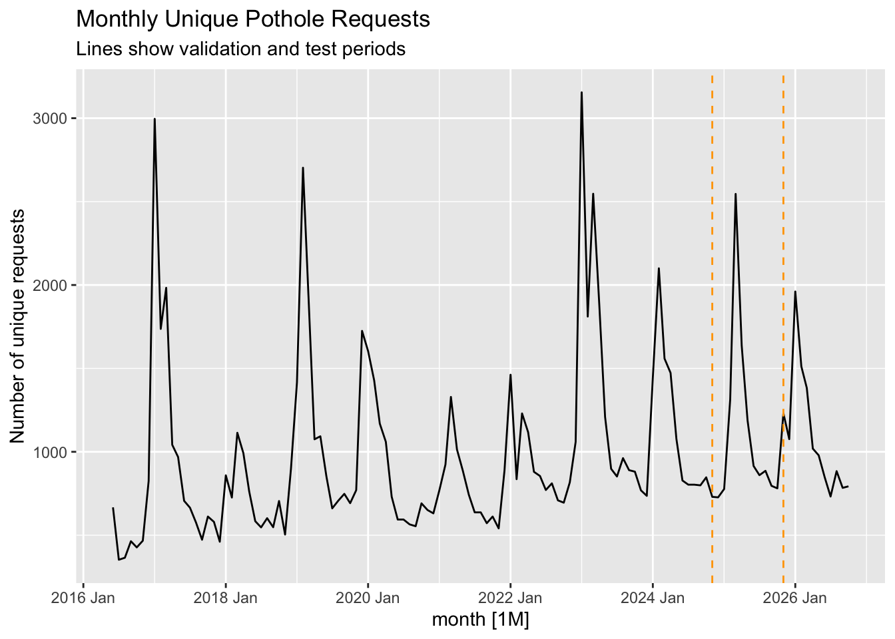
Monthly unique pothole requests show a slight upward trend, which may reflect increased use of the Get It Done program rather than worsening road damage.
train_data |>
gg_season(unique_potholes, labels = 'right') +
labs(
title = 'Sasonal plot: unique pothole requests (training period)',
y = 'Number of unique requests'
)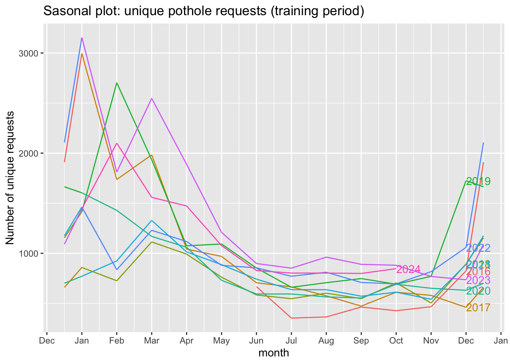
train_data |>
as_tibble() |>
mutate(
date = as.Date(month),
month_year = year(date) + if_else(month(date) >= 10, 1, 0),
w_month = factor(month.abb[month(date)],
levels = month.abb[c(10:12, 1:9)])
) |>
filter(month_year >= 2017, month_year <= 2024) |>
ggplot(aes(x = w_month, y = unique_potholes,
colour = factor(month_year), group = month_year)) +
geom_line() +
labs(
title = "Seasonal plot by rainy season: unique pothole requests",
y = "Unique pothole requests per month", colour = "month_year",
x = 'Month'
)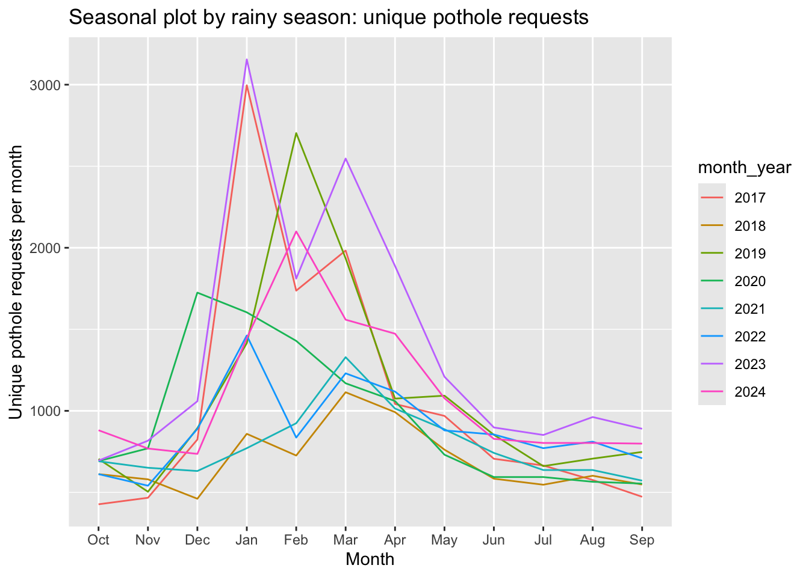
# guerrero method
lambda <- train_data |>
features(unique_potholes, features = guerrero) |>
pull(lambda_guerrero)
lambda[1] -0.8999268Data Transformation
train_data |>
autoplot(box_cox(unique_potholes, lambda)) +
labs(
title = paste0('Box-Cox transformed unique requests (lambda = ', round(lambda, 2), ')'),
y = 'Transformed requests',
)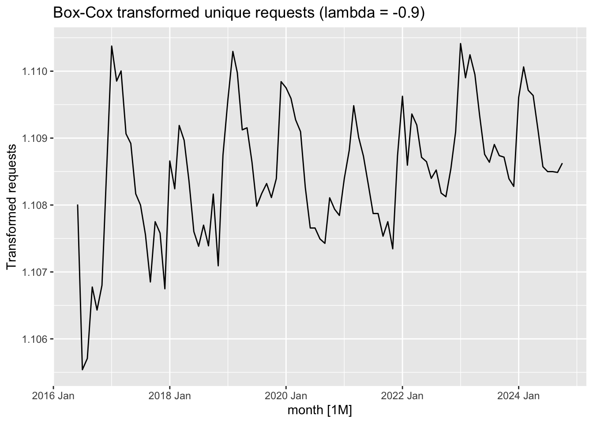
train_data |>
autoplot(log(unique_potholes)) +
labs(
title = 'Log transformed unique requests',
y = 'Transformed requests',
)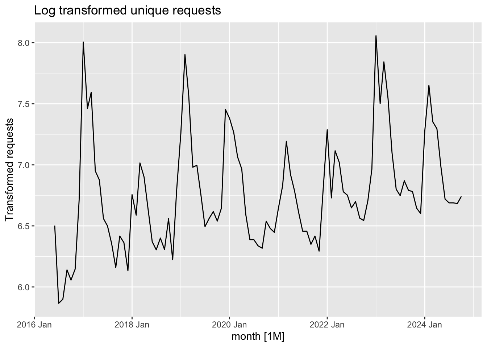
Decomposition
train_data |>
model(classical_decomposition(unique_potholes, type = 'additive')) |>
components() |>
autoplot() +
labs(
title = 'Additive decomposition (training)'
)-> p_add_decomp
ggsave('figures/additive_decomposition_(training).png', plot = p_add_decomp,
width = 8, height = 5, dpi = 300)Warning: Removed 24 rows containing missing values or values outside the scale range
(`geom_line()`).p_add_decompWarning: Removed 24 rows containing missing values or values outside the scale range
(`geom_line()`).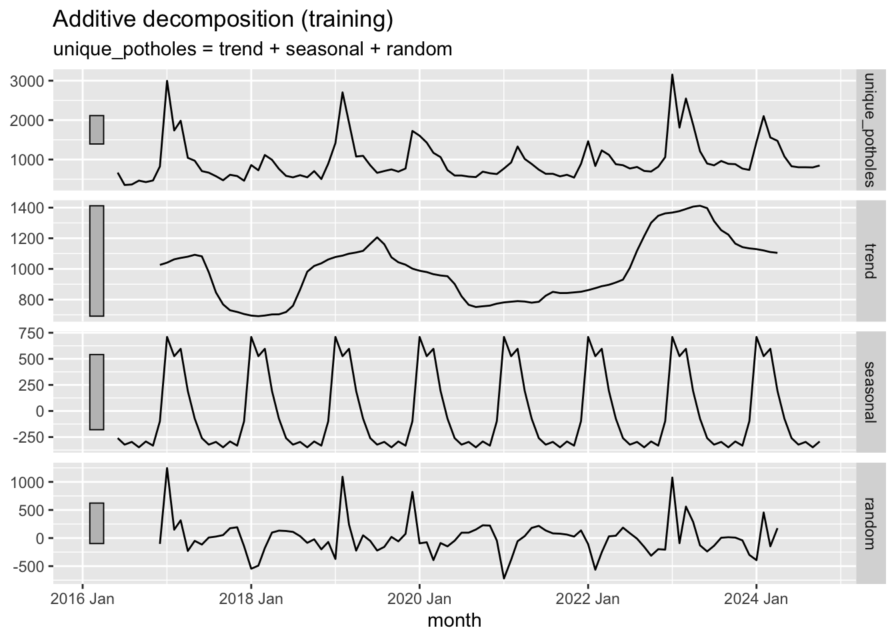
Additive decomposition interpretation
The remainder in the additive decomposition shows that errors stay close to 0 in summer, while rising from 1100 to 1200 in winter. This means errors are extremely large during winter and almost nonexistent in summer. For instance, a positive peak of 1000 means there were 1000 more requests than expected based on the trend and season, while negative dips indicate fewer pothole requests. Overall, this suggests winters are harder to predict than summers.
train_data |>
model(classical_decomposition(unique_potholes, type = 'multiplicative')) |>
components() |>
autoplot() +
labs(
title = 'Multiplicative decomposition (training)'
)-> p_mult_decomp
ggsave('figures/multiplicative_decomposition_(training).png', plot = p_mult_decomp,
width = 8, height = 5, dpi = 300)Warning: Removed 24 rows containing missing values or values outside the scale range
(`geom_line()`).p_mult_decompWarning: Removed 24 rows containing missing values or values outside the scale range
(`geom_line()`).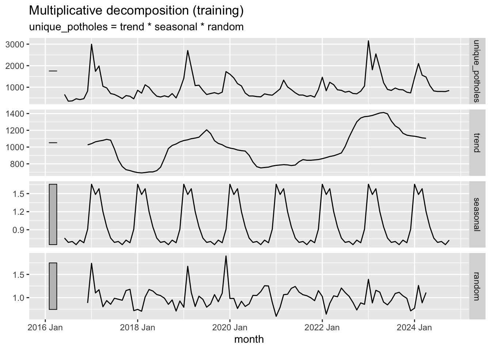
Multiplicative decomposition interpretation
The remainder in the multiplicative decomposition is distributed more evenly across the summer and winter months than in the additive decomposition. In multiplicative decomposition, if the remainder is close to 1, actual requests match the expected value. Peaks of about 1.5 indicate 50% more requests than expected, and negative dips of 0.8 indicate that actual requests were about 20% lower than expected. The multiplicative decomposition seems to fit monthly pothole requests slightly better because seasonal fluctuations are more similar in size across summer and winter months, indicating that variations are proportional to the level. This finding suggests that an ETS model with multiplicative components may fit the data better and produce more accurate forecasts.
train_data |>
model(STL(unique_potholes ~ season(window = 'periodic'))) |>
components() |>
autoplot() +
labs(title = 'STL decomposition: original series (training period)')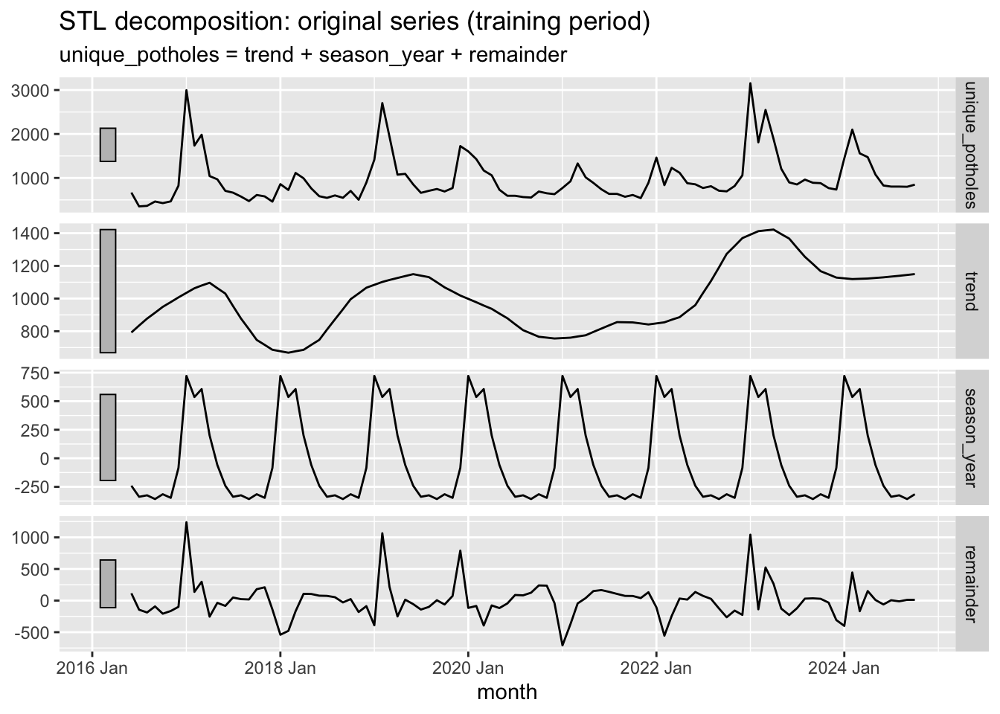
# log transformed decomposition
train_data |>
model(STL(log(unique_potholes) ~ season(window = 'periodic'))) |>
components() |>
autoplot() +
labs(title = 'STL decomposition: log series (training period)')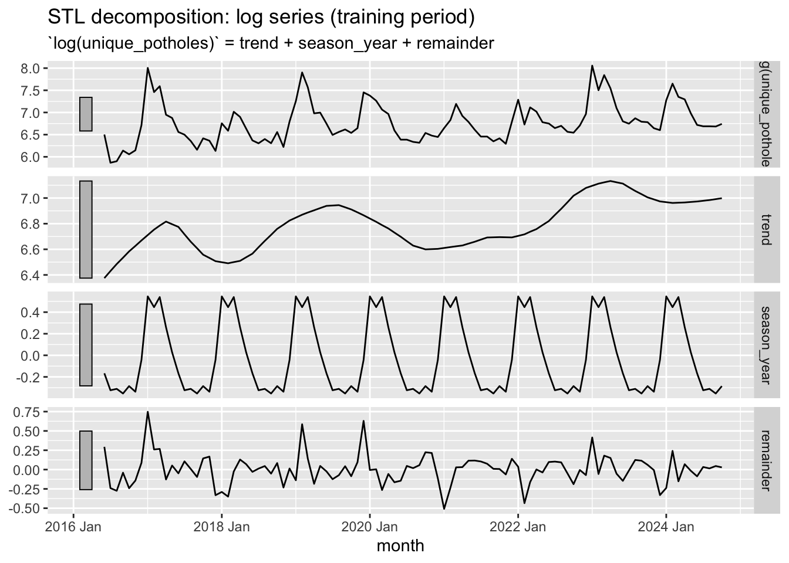
train_data |>
features(unique_potholes, feat_stl) |>
select(trend_strength, seasonal_strength_year) |>
mutate(series = 'original', .before = 1) |>
bind_rows(
train_data |>
features(log(unique_potholes), feat_stl) |>
select(trend_strength, seasonal_strength_year) |>
mutate(series = 'log', .before = 1)
)# A tibble: 2 × 3
series trend_strength seasonal_strength_year
<chr> <dbl> <dbl>
1 original 0.371 0.649
2 log 0.523 0.761# Lag plots: each panel plots this month's value against the value
# k months earlier (lags 1 to 12). Points close to the diagonal line
# mean months that far apart tend to have similar values.
train_data |>
gg_lag(unique_potholes, geom = "point", lags = 1:12) +
labs(title = "Lag plots: unique pothole requests (training period)",
x = "Value k months earlier", y = "Current value")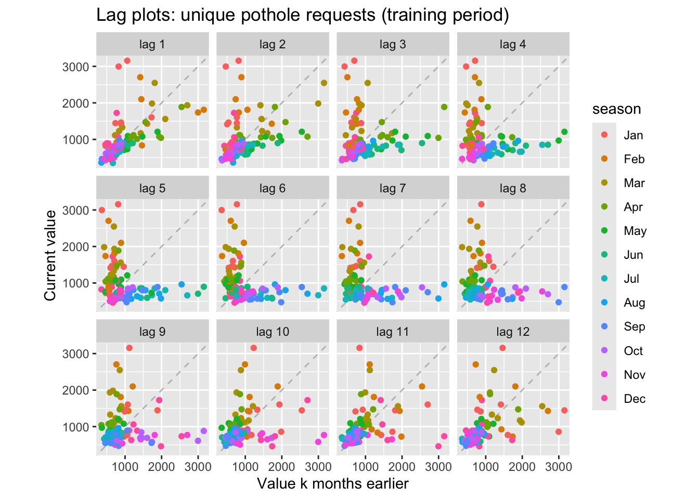
# the correlation between the series and its own past values, for lags up three years
# bars outside the dashed blue lines are larger than you'd expect from pure noise
train_data |>
ACF(unique_potholes, lag_max = 36) |>
autoplot() +
labs(title = "Autocorrelation: unique pothole requests (training period)")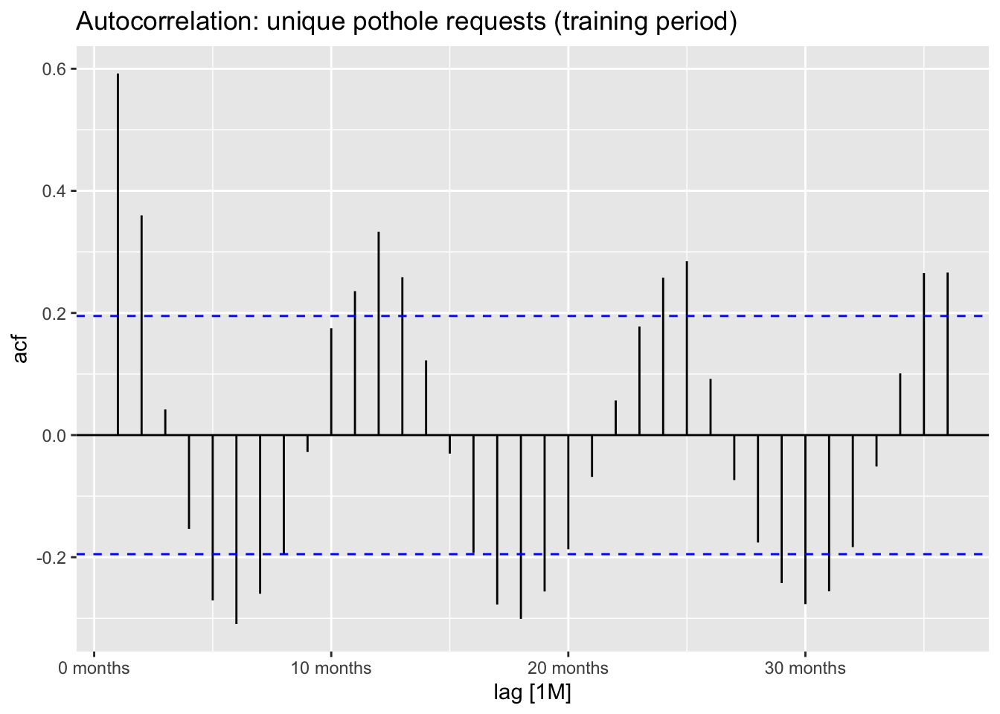
Modeling
Exponential Smoothing
# Exponential smoothing: ETS no trend and no seasonality only additive error
fit_ses <- train_data |>
model(
ses = ETS(unique_potholes ~ error("A") + trend("N") + season("N"))
)
report(fit_ses)Series: unique_potholes
Model: ETS(A,N,N)
Smoothing parameters:
alpha = 0.788854
Initial states:
l[0]
603.108
sigma^2: 227391.8
AIC AICc BIC
1715.885 1716.132 1723.730 # comparison of fitted values with actual values
augment(fit_ses) |>
ggplot(aes(x = month)) +
geom_line(aes(y = unique_potholes, colour = 'Actual')) +
geom_line(aes(y = .fitted, colour = 'SES fitted')) +
labs(title = 'SES fitted values vs. actual (training)',
y= 'Number of unique requests')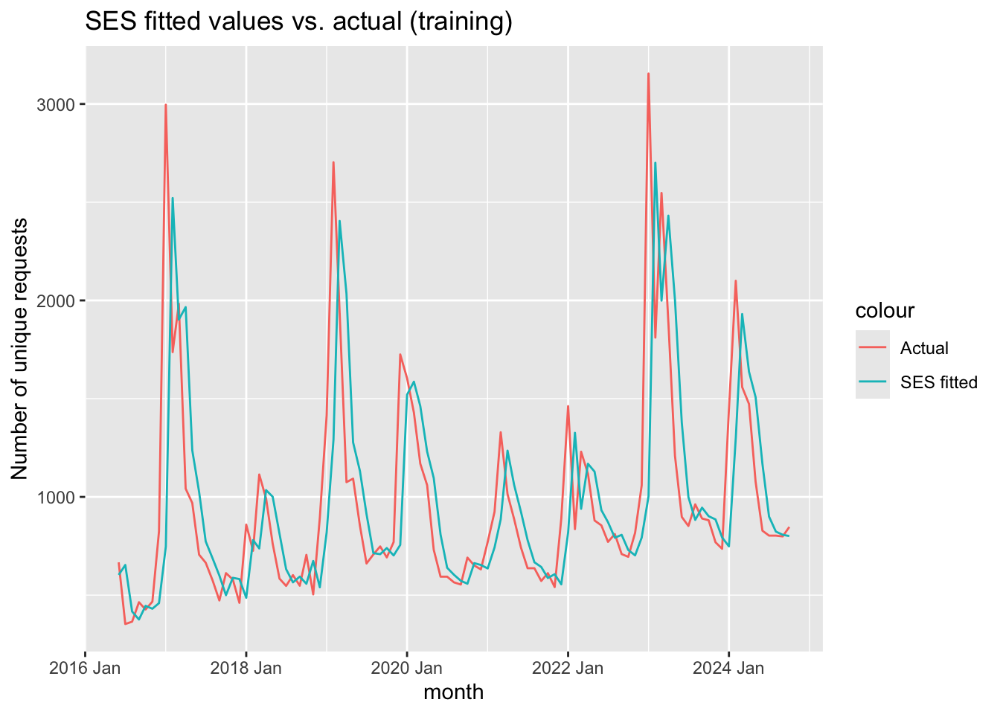
# forecast 12 months
fc_ses <- fit_ses |> forecast(h = 12)fc_ses |>
autoplot(train_data |> filter_index('2021 Nov' ~ .)) +
autolayer(val_data, unique_potholes, colour = 'red') +
labs(title = 'SES forecasts vs. Actual Validation Data',
y = 'Number of unique requests')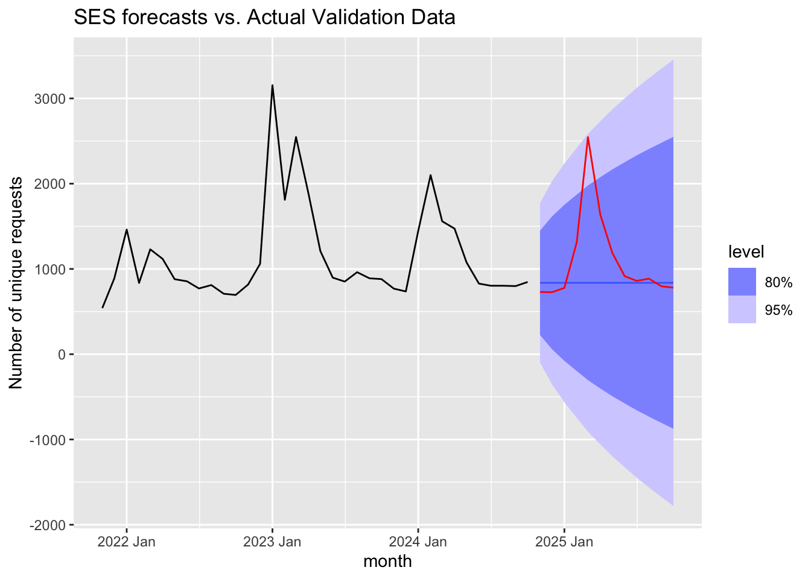
accuracy(fc_ses, pothole_monthly)# A tibble: 1 × 10
.model .type ME RMSE MAE MPE MAPE MASE RMSSE ACF1
<chr> <chr> <dbl> <dbl> <dbl> <dbl> <dbl> <dbl> <dbl> <dbl>
1 ses Test 259. 574. 322. 12.4 20.7 0.923 1.00 0.498Multiplicative ETS
# ETS Multiplicative Method: Multiplicative error and season, with no Trend
fit_mn <- train_data |>
model(
ETS_mnm = ETS(unique_potholes ~ error("M") + trend("N") + season("M"))
)
report(fit_mn)Series: unique_potholes
Model: ETS(M,N,M)
Smoothing parameters:
alpha = 0.709293
gamma = 0.0001188646
Initial states:
l[0] s[0] s[-1] s[-2] s[-3] s[-4] s[-5] s[-6]
909.7459 0.9994641 1.393538 1.742855 1.616919 1.606366 0.8048956 0.5538717
s[-7] s[-8] s[-9] s[-10] s[-11]
0.6168737 0.5895565 0.6422422 0.6632664 0.7701522
sigma^2: 0.0685
AIC AICc BIC
1579.724 1585.371 1618.951 # comparison of fitted values with actual values
augment(fit_mn) |>
ggplot(aes(x = month)) +
geom_line(aes(y = unique_potholes, colour = 'Actual')) +
geom_line(aes(y = .fitted, colour = 'Multiplicative fitted')) +
labs(title = 'Multiplicative fitted values vs. actual (training)',
y= 'Number of unique requests')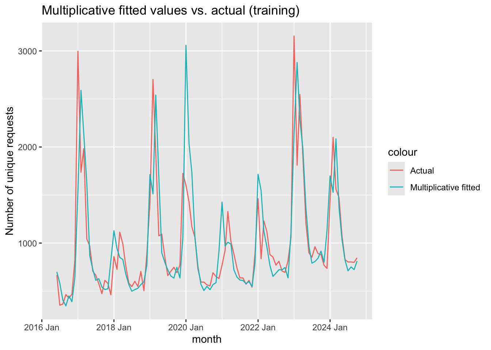
# forecast 12 months
fc_mn <- fit_mn |> forecast(h = 12)fc_mn |>
autoplot(train_data |> filter_index('2021 Nov' ~ .)) +
autolayer(val_data, unique_potholes, colour = 'red') +
labs(title = 'Mutiplicative Forecasts vs. Actual Validation Data',
y = 'Number of unique requests') accuracy(fc_mn, pothole_monthly)# A tibble: 1 × 10
.model .type ME RMSE MAE MPE MAPE MASE RMSSE ACF1
<chr> <chr> <dbl> <dbl> <dbl> <dbl> <dbl> <dbl> <dbl> <dbl>
1 ETS_mnm Test -261. 502. 293. -29.0 30.5 0.841 0.879 0.343# Exponential smoothing: ETS M,A,M
fit_ma <- train_data |>
model(
ETS_mam = ETS(unique_potholes ~ error("M") + trend("A") + season("M"))
)
report(fit_ma)Series: unique_potholes
Model: ETS(M,A,M)
Smoothing parameters:
alpha = 0.3836231
beta = 0.0001002166
gamma = 0.0001016761
Initial states:
l[0] b[0] s[0] s[-1] s[-2] s[-3] s[-4] s[-5]
900.3526 1.745663 0.8922868 1.199549 1.555927 1.730047 2.025597 0.8803769
s[-6] s[-7] s[-8] s[-9] s[-10] s[-11]
0.570154 0.5973217 0.577309 0.6252633 0.6122461 0.7339218
sigma^2: 0.0691
AIC AICc BIC
1584.456 1591.829 1628.913 # comparison of fitted values with actual values
augment(fit_ma) |>
ggplot(aes(x = month)) +
geom_line(aes(y = unique_potholes, colour = 'Actual')) +
geom_line(aes(y = .fitted, colour = 'Additive Multiplicative fitted')) +
labs(title = 'ETS(M,A,M) fitted values vs. actual (training)',
y= 'Number of unique requests')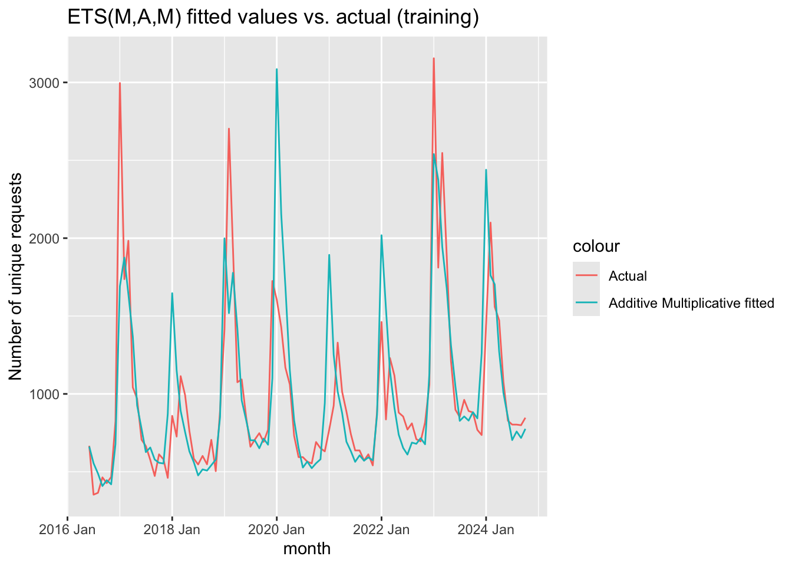
# forecast 12 months
fc_ma <- fit_ma |> forecast(h = 12)fc_ma |>
autoplot(train_data |> filter_index('2021 Nov' ~ .)) +
autolayer(val_data, unique_potholes, colour = 'red') +
labs(title = 'ETS(M,A,M) Forecasts vs. Actual Validation Data',
y = 'Number of unique requests')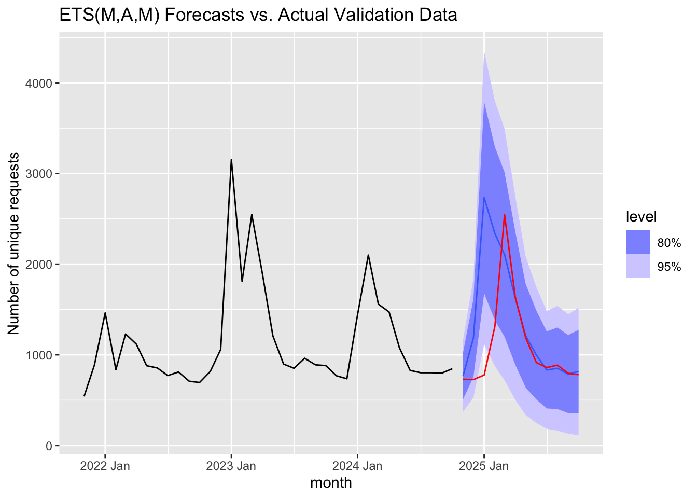
accuracy(fc_ma, pothole_monthly)# A tibble: 1 × 10
.model .type ME RMSE MAE MPE MAPE MASE RMSSE ACF1
<chr> <chr> <dbl> <dbl> <dbl> <dbl> <dbl> <dbl> <dbl> <dbl>
1 ETS_mam Test -258. 664. 345. -32.3 36.6 0.989 1.16 0.362Multiple Models Fit
fit_all <- train_data |>
model(
# baseline
ses = ETS(unique_potholes ~ error('A') + trend('N') + season('N')),
# additive errors and season
hw_add = ETS(unique_potholes ~ error('A') + trend('N') + season('A')),
# multiplicative errors and season (winter adds error percentage)
ets_mnm = ETS(unique_potholes ~ error('M') + trend('N') + season('M')),
# additive linear trend
ets_mam = ETS(unique_potholes ~ error('M') + trend('A') + season('M')),
# adding a damped trend
ets_madm = ETS(unique_potholes ~ error('M') + trend('Ad') + season('M')),
# auto selected
ets_auto = ETS(unique_potholes)
)fit_all |> select(ets_auto)# A mable: 1 x 1
ets_auto
<model>
1 <ETS(M,N,M)>fit_all |>
glance() |>
select(.model, AIC, AICc, BIC) |>
arrange(AICc)# A tibble: 6 × 4
.model AIC AICc BIC
<chr> <dbl> <dbl> <dbl>
1 ets_mnm 1580. 1585. 1619.
2 ets_auto 1580. 1585. 1619.
3 ets_mam 1584. 1592. 1629.
4 ets_madm 1596. 1604. 1643.
5 hw_add 1673. 1678. 1712.
6 ses 1716. 1716. 1724.fc_all <- fit_all |> forecast(h = 12)
fc_all |>
accuracy(pothole_monthly) |>
select(.model, RMSE, MAE, MAPE) |>
left_join(
glance(fit_all) |> select(.model, AICc),
by = '.model'
) |>
arrange(RMSE) # A tibble: 6 × 5
.model RMSE MAE MAPE AICc
<chr> <dbl> <dbl> <dbl> <dbl>
1 hw_add 424. 274. 25.5 1678.
2 ets_madm 432. 269. 26.5 1604.
3 ets_auto 502. 293. 30.5 1585.
4 ets_mnm 502. 293. 30.5 1585.
5 ses 574. 322. 20.7 1716.
6 ets_mam 664. 345. 36.6 1592.# forecast 12 months
hw_add_fc <- fit_all['hw_add'] |> forecast(h = 12)ETS(A,N,A)
augment(fit_all |> select(hw_add)) |>
ggplot(aes(x = month)) +
geom_line(aes(y = unique_potholes, colour = 'Actual')) +
geom_line(aes(y = .fitted, colour = 'ETS(A,N,A) fitted')) +
labs(
title = 'ETS(A,N,A) fitted values vs. actual (training period)',
y = 'Number of unique requests'
) -> p_ets_ana
ggsave('figures/ETS(A,N,A)_fitted_values.png', plot = p_ets_ana,
width = 8, height = 5, dpi = 300)
p_ets_ana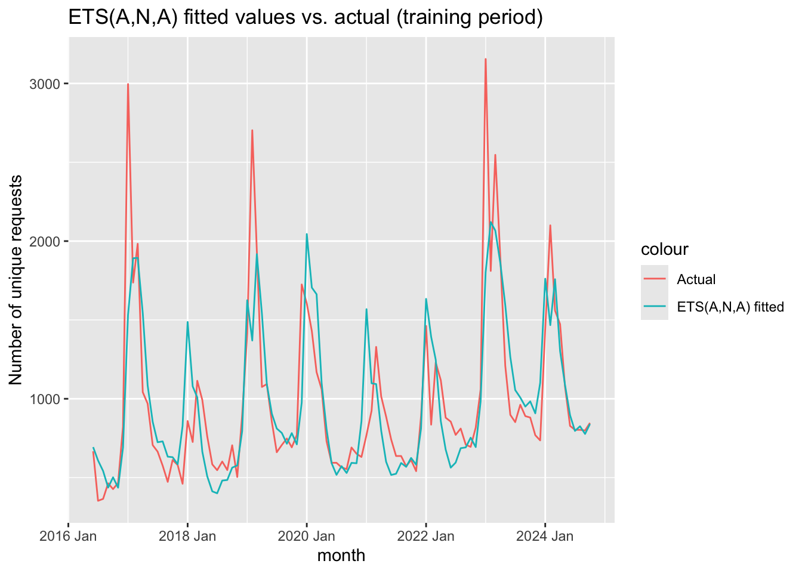
fit_all |> select(hw_add) |> report() Series: unique_potholes
Model: ETS(A,N,A)
Smoothing parameters:
alpha = 0.366244
gamma = 0.000100022
Initial states:
l[0] s[0] s[-1] s[-2] s[-3] s[-4] s[-5] s[-6]
952.8468 -70.68406 205.0038 588.1211 528.8791 707.2833 -87.12672 -330.7436
s[-7] s[-8] s[-9] s[-10] s[-11]
-292.5019 -347.6464 -307.1121 -334.2109 -259.2616
sigma^2: 132817.9
AIC AICc BIC
1672.527 1678.174 1711.754 fc_all |>
filter(.model == 'hw_add') |>
autoplot(train_data |> filter_index('2021 Nov' ~ .)) +
autolayer(val_data, unique_potholes, colour = 'red') +
labs(title = 'ETS(A,N,A) Forecasts vs. Actual Validation Data',
y = 'Number of unique requests') -> p_ets_ana_fc
ggsave('figures/ETS(A,N,A)_forecasts.png', plot = p_ets_ana_fc,
width = 8, height = 5, dpi = 300)
p_ets_ana_fc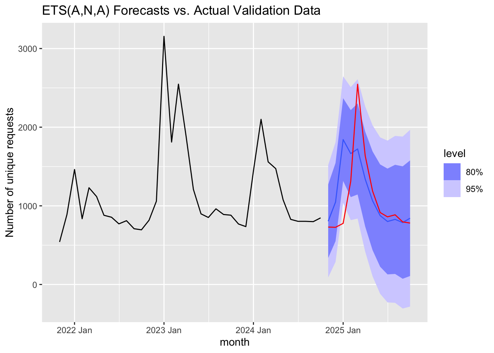
ETS(A,N,A) Interpretation
The ETS(A,N,A) model uses additive errors and additive seasonality, with no trend. This model captures the seasonal patterns in the training data fairly well. However, it tends to underestimate unusually large spikes in requests.
The smoothing parameters are alpha and gamma. The alpha value (0.366) indicates that the model considers past observations while allowing the level to adjust as new data becomes available. The small gamma value (0.0001) indicates that the model expects the seasonal pattern to change very little and relies on a stable seasonal structure. The model’s AICc is 1678.17, and its RMSE is 424.24.
The model’s report indicates that January is expected to have about 700 more requests above the level, while the summer months are expected to have about 300 fewer requests below. Because of the additive components, these estimates remain the same every year regardless of the level.
ETS(M,Ad,M)
augment(fit_all |> select(ets_madm)) |>
ggplot(aes(x = month)) +
geom_line(aes(y = unique_potholes, colour = 'Actual')) +
geom_line(aes(y = .fitted, colour = 'ETS(M,Ad,M) fitted')) +
labs(
title = 'ETS(M,Ad,M) fitted values vs. actual (training period)',
y = 'Number of unique requests'
)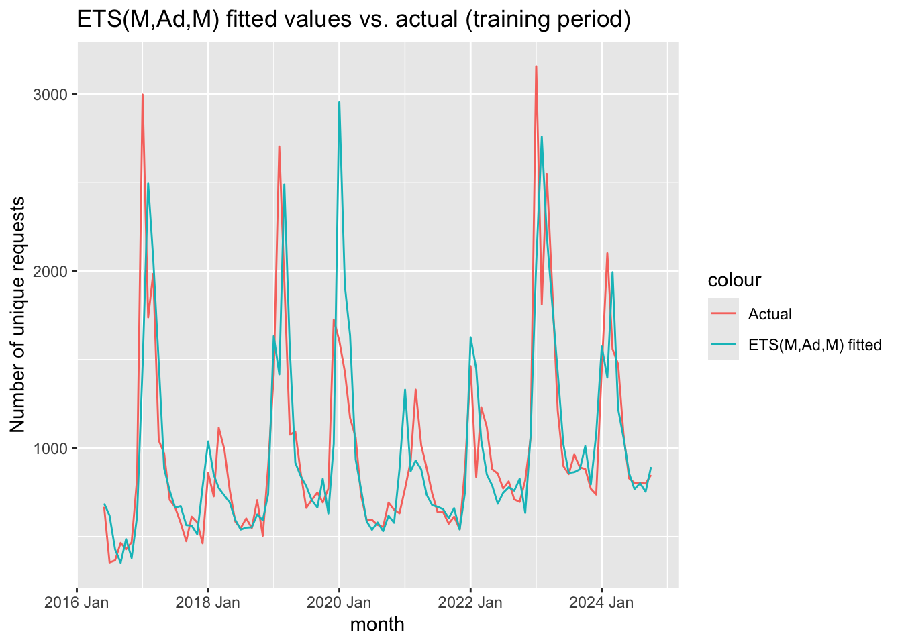
fit_all |> select(ets_madm) |> report()Series: unique_potholes
Model: ETS(M,Ad,M)
Smoothing parameters:
alpha = 0.7121433
beta = 0.02998258
gamma = 0.001472289
phi = 0.9377742
Initial states:
l[0] b[0] s[0] s[-1] s[-2] s[-3] s[-4] s[-5]
931.2049 2.019923 0.9189985 1.215354 1.665716 1.589812 1.65981 0.8705325
s[-6] s[-7] s[-8] s[-9] s[-10] s[-11]
0.6248375 0.7244656 0.638479 0.6813766 0.6754346 0.7351833
sigma^2: 0.0786
AIC AICc BIC
1596.100 1604.442 1643.173 fc_all |>
filter(.model == 'ets_madm') |>
autoplot(train_data |> filter_index('2021 Nov' ~ .)) +
autolayer(val_data, unique_potholes, colour = 'red') +
labs(title = 'ETS(M,Ad,M) Forecasts vs. Actual Validation Data',
y = 'Number of unique requests')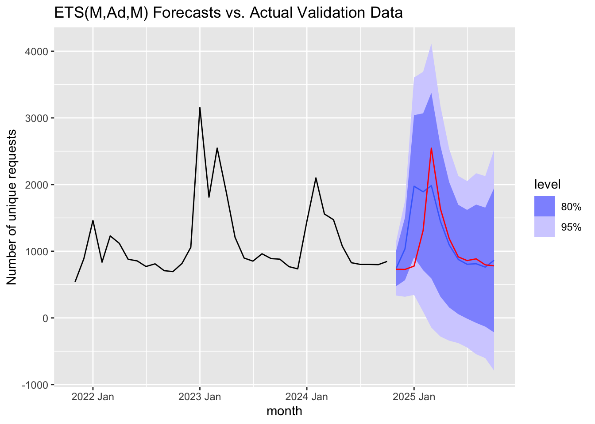
ETS(M,N,M)
augment(fit_all |> select(ets_mnm)) |>
ggplot(aes(x = month)) +
geom_line(aes(y = unique_potholes, colour = "Actual")) +
geom_line(aes(y = .fitted, colour = "ETS(M,N,M) fitted")) +
labs(
title = "ETS(M,N,M) fitted values vs. actual (training period)",
y = "Number of unique requests"
) -> p_ets_mnm
ggsave('figures/ETS(M,N,M)_fitted_values.png', plot = p_ets_mnm,
width = 8, height = 5, dpi = 300)
p_ets_mnm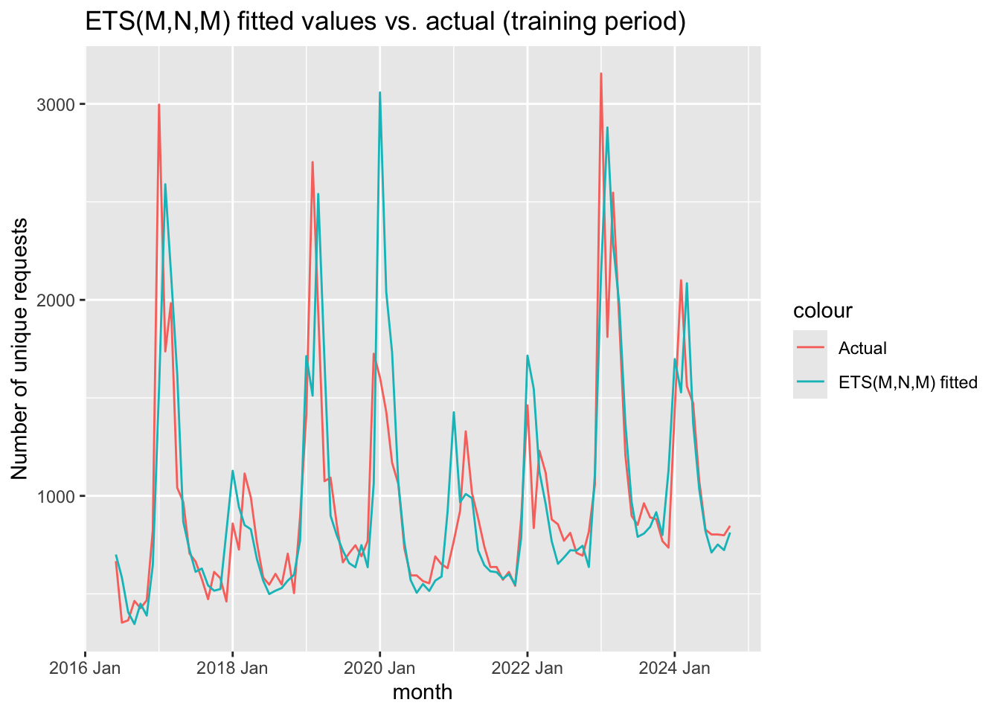
fit_all |> select(ets_mnm) |> report()Series: unique_potholes
Model: ETS(M,N,M)
Smoothing parameters:
alpha = 0.709293
gamma = 0.0001188646
Initial states:
l[0] s[0] s[-1] s[-2] s[-3] s[-4] s[-5] s[-6]
909.7459 0.9994641 1.393538 1.742855 1.616919 1.606366 0.8048956 0.5538717
s[-7] s[-8] s[-9] s[-10] s[-11]
0.6168737 0.5895565 0.6422422 0.6632664 0.7701522
sigma^2: 0.0685
AIC AICc BIC
1579.724 1585.371 1618.951 fc_all |>
filter(.model == 'ets_mnm') |>
autoplot(train_data |> filter_index('2021 Nov' ~ .)) +
autolayer(val_data, unique_potholes, colour = 'red') +
labs(title = 'ETS(M,N,M) Forecasts vs. Actual Validation Data',
y = 'Number of unique requests') -> p_ets_mnm_fc
ggsave('figures/ETS(M,N,M)_forecasts.png', plot = p_ets_mnm_fc,
width = 8, height = 5, dpi = 300)
p_ets_mnm_fc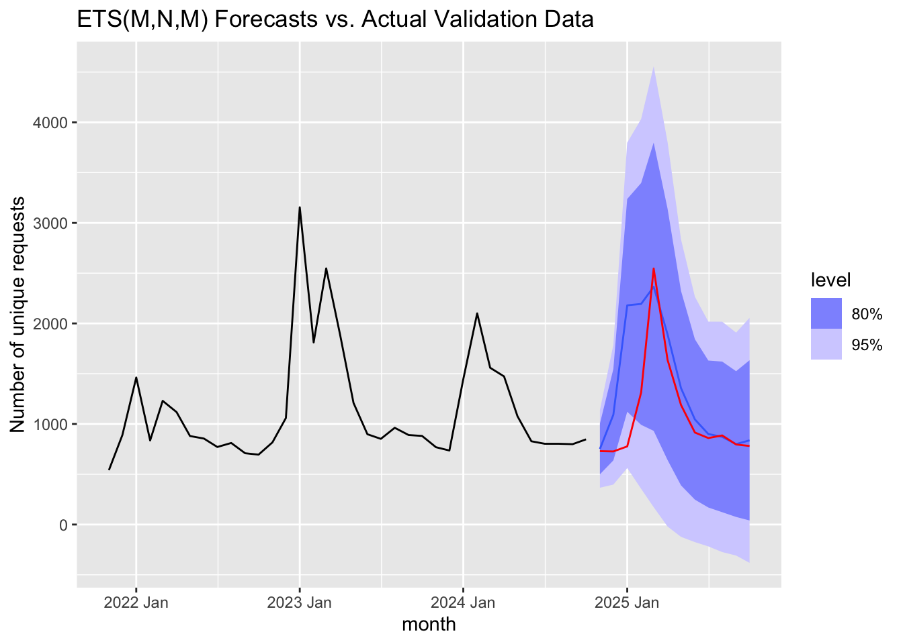
ETS(M,N,M) Interpretation
The ETS(M,N,M) model has multiplicative errors and seasonality and has no trend component. The fitted values closely match historical observations, capturing seasonal peaks and shifts in request volume.
The estimated smoothing parameters provide additional insight into the model’s performance. The alpha value (0.709) indicates that the model places more weight on recent observations, allowing it to adjust more quickly to changes in request volume. Similar to the ETS(A,N,A) model, the small gamma value (0.0001) assumes a stable seasonal pattern. The model’s AICc is 1585.37, and its RMSE is 502.06.
The model’s seasonal indices indicate that requests increase in January, February, March, and April, with estimated increases of about 74% above the level in March, 61% in February and January, and 39% in April, aligning with San Diego’s rainy season.
Confidence intervals are narrower during low-demand months and wider during peak months because the model’s multiplicative errors scale with the level. In contrast, ETS(A,N,A) confidence intervals remain the same in summer and winter.